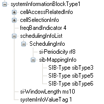
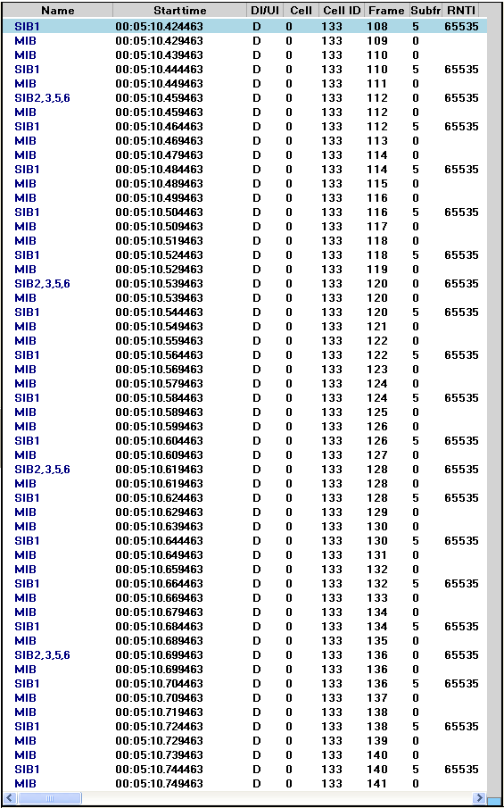

LTE Basic Procedure Go Back To Index Home : www.sharetechnote.com
SIB Scheduling
In LTE, MIB, SIB1, SIB2 is mandated to be transmitted for any cells. Since many of the SIB are transmitted, it should be transmitted in such a way that the location (subframe) where a SIB is transmitted should not be the same subframe where another SIB is transmitted.
Overall SIB Scheduling concept is as follows. As you see
i) MIB is transmitted at a fixed cycles (every 4 frames starting from SFN 0)
ii) SIB1 is also transmitted at the fixed cycles (every 8 frames starting from SFN 0).
iii) All other SIB are being transmitted at the cycles specified by SIB scheduling information elements in SIB1

You may notice that LTE SIB1 is very similar to WCDMA MIB.
Especially at initial test case development, you have to be very careful about item v). If you set this value incorrectly, all the other SIBs will not be decoded by UE. And as a result, UE would not recognize the cell and show "No Service" message.
According to 36.331 section 5.2.1.2, the SIB1 scheduling is as follows :
The SystemInformationBlockType1 uses a fixed schedule with a periodicity of 80 ms and repetitions made within 80 ms.The first transmission of SystemInformationBlockType1 is scheduled in subframe #5 of radio frames for which the SFNmod 8 = 0, and repetitions are scheduled in subframe #5 of all other radio frames for which SFN mod 2 = 0.
This means that even though SIB1 periodicity is 80 ms, different copies (Redudancy version : RV) of the SIB1 is transmitted every 20ms. Meaning that at L3 you will see the SIB1 every 80 ms, but at PHY layer you will see it every 20ms. For the detailed RV assignment for each transmission, refer to 36.321 section 5.3.1 (the last part of the section)
The transmission cycles for other SIBs are determined by schedulingInfoList in SIB1 as shown in the following example (This example is the case where SIB2 and 3 are being transmitted).
+-schedulingInfoList ::= SEQUENCE OF SIZE(1..maxSI-Message[32]) [2]
| +-SchedulingInfo ::= SEQUENCE
| | +-si-Periodicity ::= ENUMERATED [rf16]
| | +-sib-MappingInfo ::= SEQUENCE OF SIZE(0..maxSIB-1[31]) [0]
| +-SchedulingInfo ::= SEQUENCE
| +-si-Periodicity ::= ENUMERATED [rf32]
| +-sib-MappingInfo ::= SEQUENCE OF SIZE(0..maxSIB-1[31]) [1]
| +-SIB-Type ::= ENUMERATED [sibType3]
+-tdd-Config ::= SEQUENCE OPTIONAL:Omit
+-si-WindowLength ::= ENUMERATED [ms20]
One thing you would notice that sib-MappingInfo IE in the first node is not specified, but the first entity of schedulingInfoList should always be for SIB2 as specified in the 36.331 as follows (See 36.331 SystemInformationBlockType1 field description).
List of the SIBs mapped to this SystemInformation message.There is no mapping information of SIB2; it is always
present in the first SystemInformation message listed in the schedulingInfoList list.
Understanding overall cycle in the unit of Subframe number is pretty straightforward to understand. But understanding exactly at which subframe a SIB should be transmitted is not that straightforward as you might think. It is related to 'si-WindowLength'. si-WindowLength tells that a SIB should be transmitted somewhere within the window length starting at the SFN specified by si-Periodicity. But this parameter does not specify the exact subframe number for the transmission.
The subframe for a specific SIB transmission is determined by a algorithm defined in 36.331 5.2.3 Acquisition of an SI message as follows.
When acquiring an SI message, the UE shall:
1> determine the start of the SI-window for the concerned SI message as follows:
2> for the concerned SI message, determine the number n which corresponds to the order of entry
in the list of SI messages configured by schedulingInfoList in SystemInformationBlockType1;
2> determine the integer value x = (n – 1)*w, where w is the si-WindowLength;
2> the SI-window starts at the subframe #a, where a = x mod 10, in the radio frame for which SFN mod T =
FLOOR(x/10), where T is the si-Periodicity of the concerned SI message;
NOTE: E-UTRAN should configure an SI-window of 1 ms only if all SIs are scheduled before subframe #5 in
radio frames for which SFN mod 2 = 0.
1> receive DL-SCH using the SI-RNTI from the start of the SI-window and continue until the end of the SI-window
whose absolute length in time is given by si-WindowLength, or until the SI message was received, excluding the
following subframes:
2> subframe #5 in radio frames for which SFN mod 2 = 0;
2> any MBSFN subframes;
2> any uplink subframes in TDD;
1> if the SI message was not received by the end of the SI-window, repeat reception at the next SI-window occasion
for the concerned SI message;
< Example >
Following is a SIBs captured from a live network. Go through the capture and check if it matches your understanding.

